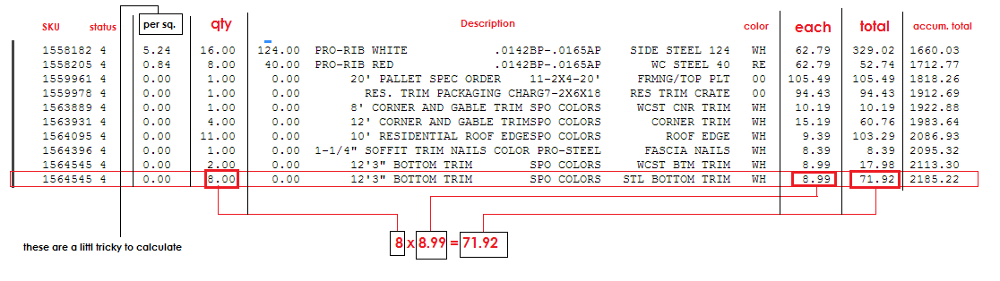

Material List (a.k.a option list, custom list, selection list)
The material list is a text file usually "material.txt" that is generated per application use when you reach the end of the kiosk app. It is basically a list of all materials gathered/selected during the application process.
We use this text file for testing purposes, such as to see if a certain material is selected or should or should not be there. Material list are most helpful when you need to verify of a certain item SKU was placed in the final order and such things like that.
Deck (java)

Garage C++
Highlights
- The material list is however located in two different places depending on whether the app is a Java or C++ application.
-
Java app: C:/menards/matlist/
All java app will generate the material list into this directory for conveniency. So they all share the same directory. Each material list from each Java app has a number identification. (ie. 24=deck, 25=landscaping, etc) -
C++ app: C:/mes/projectName/material.txt
Each C++ app will generate it's own material list file inside its own workspace.
Base List
- Some app like "Polebarn" still provides a base list. It is a material list that has pre-defined selecitons. The selections will always be the same as the pre-defined materials are coded right inside the baselist function. Where the base list is used, is at the end of the app where guest can see a comparison calculation of their options price and the base price.
- There is not a way to print the base list of materials unless you implement one. But all items that are standard are materials in the base list. Materials that say "best" or "recommended" are not in the base list as these are custom or option materials.